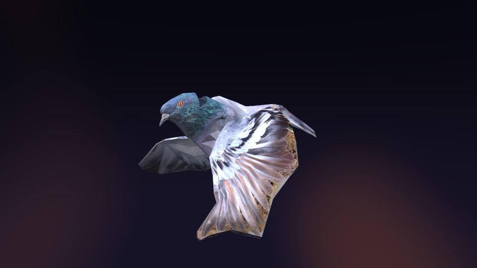
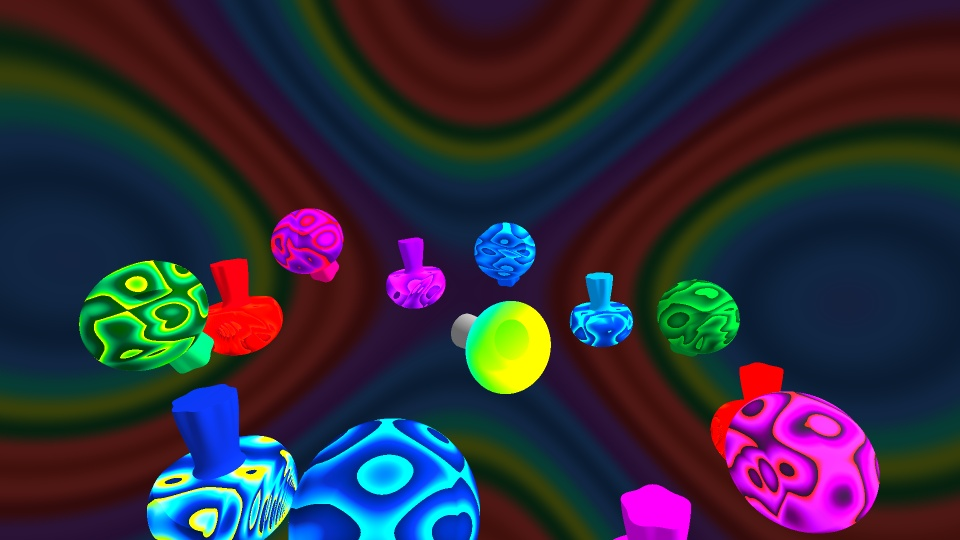

RedVoxPigeon Hole — True Mesh
The real pigeon model, traced triangle by triangle. Fly or walk poses, Neon, Realistic or Dove looks, and a corruption bank that melts, twists and shatters the actual bird.
- 50 controls
- 2 poses
- 3 looks
Three audio-reactive scenes made for Vinesauce and RedVox. Download them for Synesthesia, or try Pigeon Hole straight in your browser with no install.

RedVoxThe real pigeon model, traced triangle by triangle. Fly or walk poses, Neon, Realistic or Dove looks, and a corruption bank that melts, twists and shatters the actual bird.

VinesauceA ring of spinning mushrooms that bounce to the music over a tie-dye background. Trails, glitch and low-poly controls, and you can put your own video behind it.
 RedVox
RedVox
The RedVox rat, ray-traced from the real model, with a pizza slice in its mouth you can switch on. SPEEN tumble, camera presets, corruption, trails and low-poly.
.synScene. That folder is the scene.Click a control, then press D for default, R for random or L to lock it, same as any Synesthesia scene.